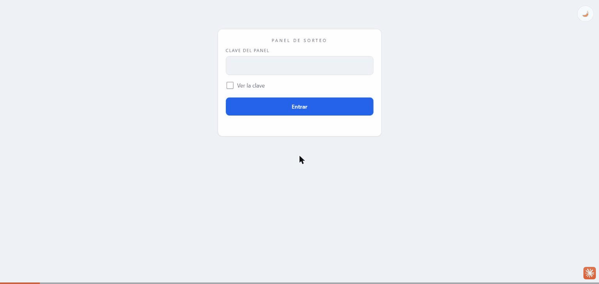
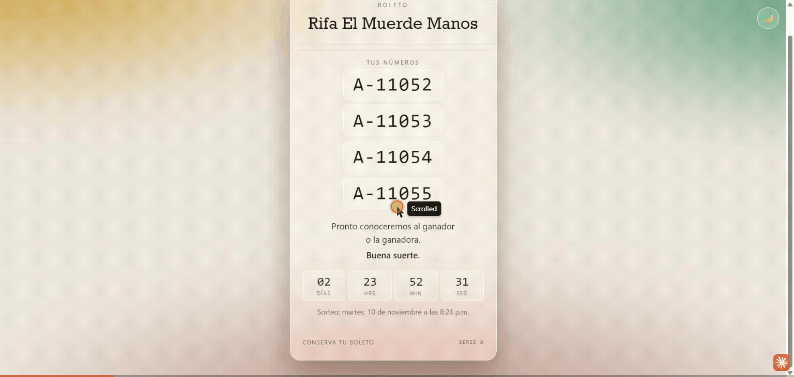
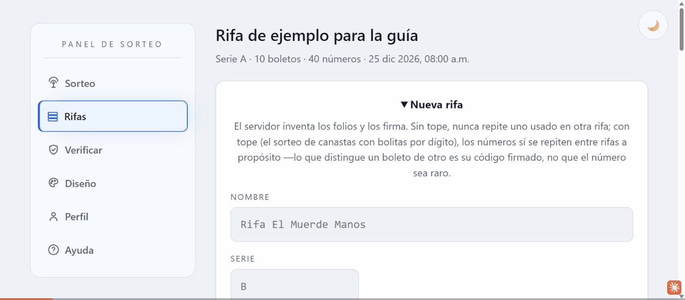
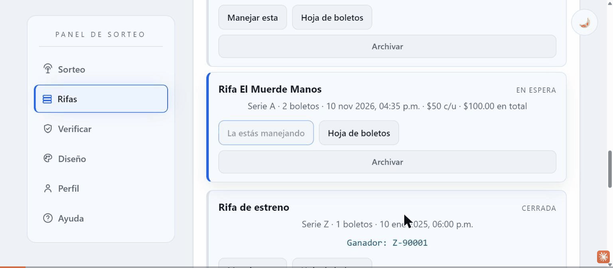
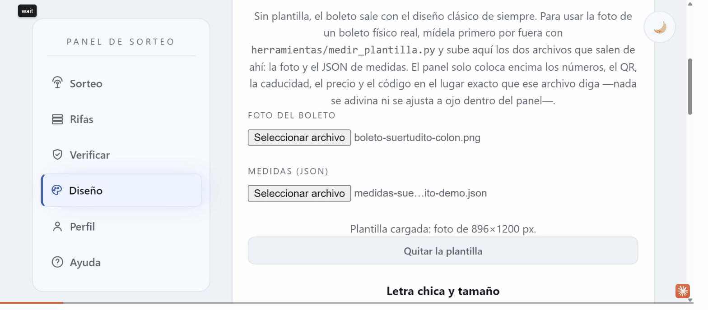
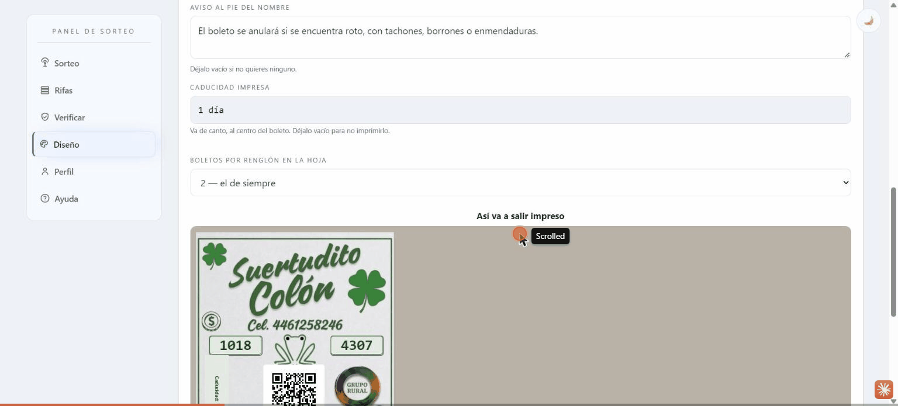
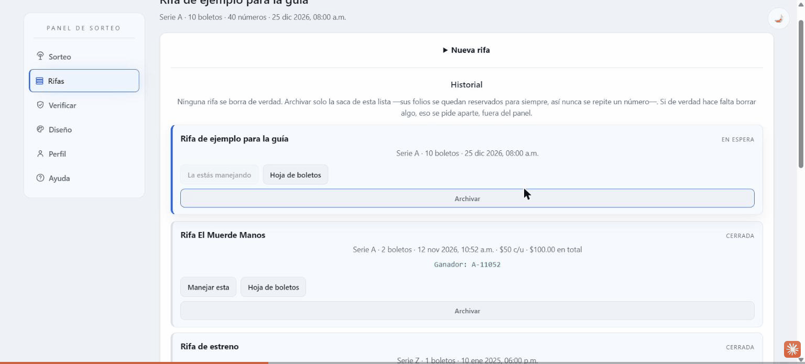
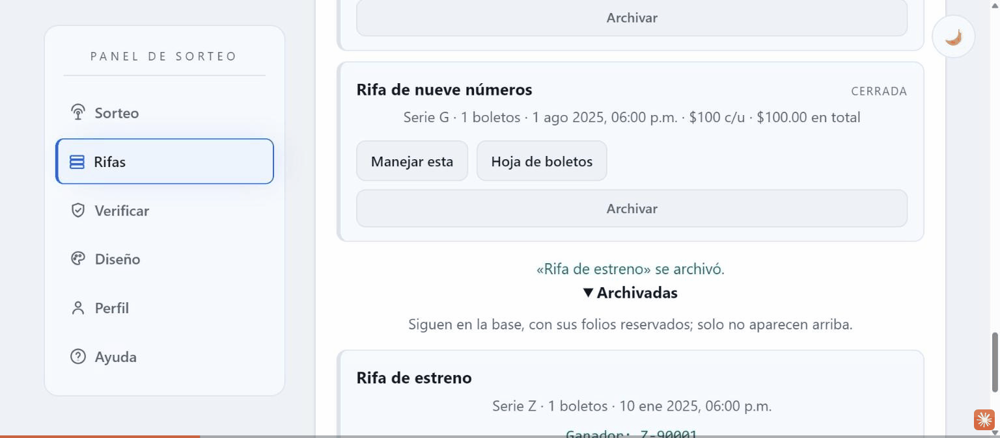
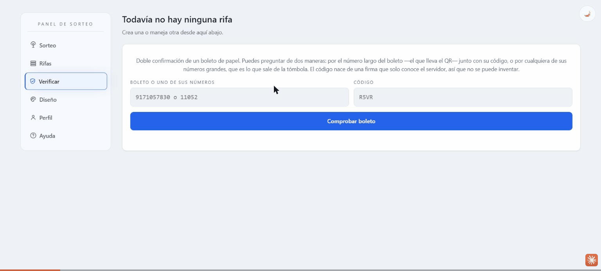
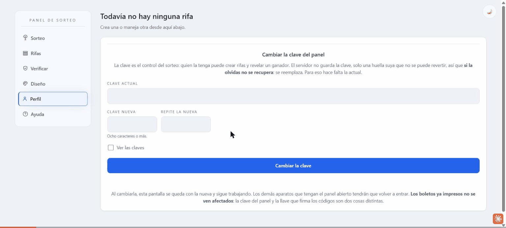

Panel de sorteo
—
-
1. Revelar al ganador
Esto es irreversible: una vez registrado, el folio ganador no se puede cambiar.
-
Compara con el talón
—
-
2. Cerrar
Cierra el sorteo. El resultado sigue visible para quien escanee.
Folios de esta rifa (0)
Después de revelar, el ganador queda grabado para siempre.
Nueva rifa
El servidor inventa los folios y los firma. Sin tope, nunca repite uno usado en otra rifa; con tope (el sorteo de canastas con bolitas por dígito), los números sí se repiten entre rifas a propósito —lo que distingue un boleto de otro es su código firmado, no que el número sea raro.
Historial
Ninguna rifa se borra de verdad. Archivar solo la saca de esta lista —sus folios se quedan reservados para siempre, así nunca se repite un número—. Si de verdad hace falta borrar algo, eso se pide aparte, fuera del panel.
Archivadas
Siguen en la base, con sus folios reservados; solo no aparecen arriba.
Doble confirmación de un boleto de papel. Puedes preguntar de dos maneras: por el número largo del boleto —el que lleva el QR— junto con su código, o por cualquiera de sus números grandes, que es lo que sale de la tómbola. El código nace de una firma que solo conoce el servidor, así que no se puede inventar.
Diseño del boleto
Le da aspecto al boleto que se imprime. Se guarda en la rifa que el panel está manejando, así que cada rifa puede verse distinta y volver a imprimir una hoja vieja da la hoja de entonces. La pantalla que ve quien escanea no cambia: esa está afinada para abrir en una antena saturada y ahí cada adorno pesa.
Plantilla
Sin plantilla, el boleto sale con el diseño clásico de siempre. Para usar la foto de un boleto físico real, elige una ya guardada o sube una foto nueva y márcala directamente en esta página — sin instalar nada ni tocar el repositorio. El panel coloca encima los números, el QR, la caducidad, el precio y el código en el lugar exacto que se haya marcado —nada se adivina ni se ajusta a ojo dentro del panel—.
Buscando tus plantillas guardadas…
O mide una foto nueva
¿Ya mediste este boleto antes? Reutiliza ese archivo
Si ya habías medido esta misma plantilla en otra ocasión y guardaste ese archivo, súbelo aquí para no repetir los pasos de arriba.
Letra chica y tamaño
Así va a salir impreso
Cambiar la clave del panel
La clave es el control del sorteo: quien la tenga puede crear rifas y revelar un ganador. El servidor no guarda la clave, solo una huella suya que no se puede revertir, así que si la olvidas no se recupera: se reemplaza. Para eso hace falta la actual.
Al cambiarla, esta pantalla se queda con la nueva y sigue trabajando. Los demás aparatos que tengan el panel abierto tendrán que volver a entrar. Los boletos ya impresos no se ven afectados: la clave del panel y la llave que firma los códigos son dos cosas distintas.
Cómo funciona todo esto
Esta pestaña no hace nada por sí sola: es la explicación de las otras cinco, en español llano. Si algo no sale como aquí se describe, probablemente cambió algo en el panel — avísalo.

Lo que ve la gente
-
Cada boleto de papel trae un QR y unos números grandes.
Al escanear el QR, el celular de quien compró abre una página con el nombre de la rifa, sus números y una cuenta regresiva hasta la hora del sorteo. No necesita instalar nada ni crear cuenta.

-
Esa pantalla se actualiza sola.
En cuanto reveles un ganador aquí en el panel, todos los teléfonos que tengan esa página abierta —o la vuelvan a abrir después— se enteran solos, sin que nadie tenga que avisar nada.
-
El panel es lo único que puede cambiar algo.
Quien solo tiene el boleto nunca puede alterar un resultado ni ver boletos ajenos. Solo quien entra aquí, con la clave, puede crear rifas o revelar un ganador.
Cómo crear una rifa nueva
-
Ve a la pestaña «Rifas» y abre «Nueva rifa».
Es el primer bloque de esa pestaña, plegado por omisión; tócalo para desplegarlo.
-
Llena nombre, serie, día y hora del sorteo, y cuántos boletos quieres.
Los demás campos —dígitos del folio, tope, números por boleto, precio— ya traen un valor razonable; solo cámbialos si de verdad lo necesitas. Si tienes dudas sobre el «tope», léelo con calma ahí mismo: el panel te avisa si el número que pusiste deja una canasta casi vacía.
-
Toca «Generar rifa y boletos».
El servidor inventa los folios, los firma, y en segundos tienes el lote completo. El panel salta solo a la pestaña «Sorteo», ya manejando la rifa nueva.
-
Imprime la hoja de boletos.
De vuelta en «Rifas», busca tu rifa en el historial y toca «Hoja de boletos»: se abre una página lista para imprimir o guardar como PDF desde el mismo diálogo de impresión.

Cómo revelar al ganador y cerrar la rifa
-
En «Rifas», toca «Manejar esta» en la rifa del sorteo de hoy.
El panel solo puede revelar o cerrar la rifa que está manejando en ese momento — por eso siempre se elige primero.
-
En «Sorteo», escribe el número que salió de la tómbola física y espera a que aparezca su código.
Ese código es tu forma de comparar el papel real que sacaste contra lo que dice el sistema, antes de confirmar nada. Si el número no es de esta rifa, el panel lo dice ahí mismo.
-
Toca «Revelar» (o «Sortear al azar» si no hay tómbola física).
Esto no se puede deshacer. En cuanto confirmes, todos los teléfonos que abran su boleto van a ver el resultado.
-
Cuando ya se entregó el premio, toca «Cerrar».
Es solo una etiqueta para tu propio orden —«Cerrada» en vez de «Ganador revelado»—; no cambia nada de los boletos ni del ganador.

Cómo corregir o cambiar una rifa después
Nada de esto toca los números, los códigos ni al ganador — son solo el aspecto de la hoja y los datos que se le imprimen encima.
Sin ninguna plantilla cargada, el boleto siempre sale con el diseño clásico de siempre —fondo blanco, números en recuadros—. Para usar la FOTO de un boleto físico real en su lugar, estos son los pasos completos, desde medirla hasta verla salir en la hoja impresa:
-
¿Ya tienes una plantilla guardada? Elígela ahí mismo.
En «Diseño» → «Plantilla» aparece primero tu biblioteca de plantillas, con su foto en miniatura. Toca «Usar esta» y queda puesta al instante, sin medir nada de nuevo. Si no tienes ninguna todavía, sigue a los pasos de abajo.
-
Para una foto nueva, súbela donde dice «O mide una foto nueva».
En cuanto subas la foto aparece el botón «Medir esta foto aquí mismo» — no hace falta instalar nada ni tocar el repositorio.
-
Marca cada parte sobre la foto, paso por paso.
El medidor va pidiendo, uno por uno: los cuatro recuadros de número, el QR, el precio, el pie, y por último cuatro colores con cuentagotas (fondo, letra chica, números, marco). No hace falta ser exacto al marcar los recuadros de número: basta un clic cerca del borde y el navegador encuentra el borde exacto solo. Usa el control de «Acercar» si algo se ve muy chico para marcarlo bien. Al terminar el último paso, la plantilla queda lista — el estado cambia a «Plantilla cargada» y la vista previa, más abajo, dibuja el boleto real con sus números y su QR encima de la foto.
-
Guárdala con un nombre para no medirla otra vez.
Debajo de «Quitar la plantilla» aparece un campo para ponerle nombre y el botón «Guardar en mi biblioteca». Desde ahí se puede renombrar o borrar cuando haga falta, sin afectar a ninguna rifa que ya la tenga puesta.
-
Revisa la vista previa y toca «Guardar el diseño».
Esto es lo que de verdad «la manda a llamar»: hasta no tocar este botón, la plantilla subida solo vive en tu navegador, no en la rifa. Al guardar, el panel confirma «La próxima hoja de boletos de esta rifa va a salir así» — y desde ese momento, cada vez que toques «Hoja de boletos» en «Rifas», la hoja impresa sale con esa foto, no con el diseño clásico.
-
El precio se corrige con su propio botón, dentro de «Diseño», sin tocar nada más de la rifa.
-
«Quitar la plantilla» o «Volver al de siempre» regresan el boleto al diseño clásico. El primero solo quita la plantilla a medio cargar, antes de guardar; el segundo también borra la que ya estaba guardada en la rifa, con su propia confirmación porque no se puede deshacer.


Cómo «cancelar» una rifa (archivarla)
El panel nunca borra nada de verdad. Lo que hay es «Archivar»: saca la rifa de la lista de arriba, pero sus números se quedan reservados para siempre —así ninguno se repite por accidente más adelante— y cualquier boleto ya impreso de esa rifa sigue abriendo su resultado igual que antes.
-
En «Rifas», toca «Archivar» en la rifa que ya no quieres ver en la lista.
Funciona igual si ya tiene ganador revelado que si no: archivar es independiente del sorteo.
-
Para recuperarla, abre «Archivadas» y toca «Reactivar».
Vuelve a aparecer en la lista de siempre, exactamente como estaba.


Si de verdad necesitas BORRAR una rifa —liberar sus números para reusarlos, algo que casi nunca hace falta—, eso no se hace desde aquí a propósito: pide ese borrado aparte, directo en la base de datos, y solo confirmando por nombre exactamente cuál rifa.
Verificar un boleto de papel, y cambiar tu clave
-
«Verificar» es para el día del evento: alguien duda si su papel es original. Escribe el boleto (o cualquiera de sus números) junto con el código impreso, y el panel dice si calza.

-
«Perfil» es donde cambias la clave del panel —pide la actual, tecleada, no la que la pantalla ya tenía guardada—. Si la pierdes, no hay botón que la recupere: se reemplaza directo en Supabase, pide ayuda para eso.
